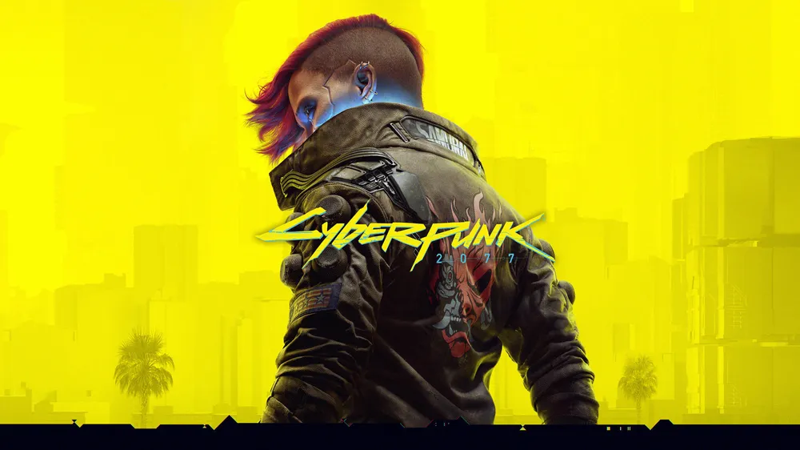
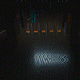

친구들이랑 같이 가자니 죽을까봐 미안해서 대기업 정문으로 들어가서 학살극 벌이기
그냥 싸이코임

친구들이랑 같이 가자니 죽을까봐 미안해서 대기업 정문으로 들어가서 학살극 벌이기
그냥 싸이코임
저거 머리속 남자가 쳐들어가자고 부추긴거보니 정병이긴함
약먹으면 조니핸드가 사라져요..


아담 스매셔랑 v는 자기가 통제할 수 있는 싸이버 사이코라고 하던데
자연사이코라
설정상 싸패들은 사이버사이코 안걸릴껄 ㅋㅋㅋㅋ
V는 통제 조차도 필요없이 어떤 과부하도 안걸리고 막쓰잖어. 아담스매셔는 사이버사이코만 면역에 가까운거지 임플란트가 주는 정신적 디버프는 다 극복하고 사용하는건데...너무 불쌍해
그게 아니고 아담스매셔는 사이버사이코 상태임 과부하 디버프 없는 순수 무적상태
세계관 상 유일해서 사이버펑크2077에서도 저새끼 사이버사이코 왜 안된거냐고 주변사람들이 신기해하는 대사가 나오는데 사이버사이코에 대한 일반인식 기준에서 벗어났다는 표현임
설정상 이미 사이버사이코이고 주인공의 "아치에너미"로 설계된 유일한 케릭터임
그래서 아무리 임플란트 쳐달아도 디버프가 없고 이성을 유지함
코어룰상 인간성0에서 사이버사이코 터지고 이성과 자아 유지한 유일한 케릭터로 나옴(사이버사이코 상태가 더이상 악화되지도 않음)
이미 개조 전부터 인간성이 3~1인 연쇄살인범, 쾌락살인범이었다가 개조시술되고 0 된 케이스
아라사카는 얘를 발견한 덕분에 이와 같은 놈들을 발견할려고 내성이 높은 자들을 찾아서 리스트화시킴
그와중에 데이비드와 D 탈리아 등이 포함된거고 엣지러너에서 데이비드가 고액의 특수 억제제를 계속 얻은게 아라사카가 데이비드를 통해 약물 테스트를 진행중이라 몰래 공급하던거
ㄴㄴ 그게 되는건 아담스매셔 뿐임 ㅋㅋㅋㅋ
V는 내성이 미친레벨의 그냥 싸이코새끼
아담스매셔는 고기능성 사이버사이코고 세계관에 얘 혼자임
V내성도 나중에 개연성 생긴게 조니 실버핸드임
머릿속에 조니가 있어서 그동안 임플란트 부작용을 억제할 수 있어서 남들보다 뛰어난 저항을 보인거고
실제로 그게 한계가 와서 마지막 엔딩에 결정 분기점 갈린거라고
사이버사이코가 안되는 방법
미리 미쳐있으면 상관 없음
시작부터 한 짓 = 이재용 펜트하우스 가서 금고털고 아파트 경비들 다 죽이고 나오기
갤럭시 시제품 훔쳐오랬더니 한남더힐 쳐들어가서 경비할아버지들 다 죽이고 택시타고 빠져나옴
뉴스에서는 이건희가 죽었다고 난리인데 암튼 지가 죽인건 아니고 이재용이 이건희 죽이는거 봤다고 함
그리고 아무런 죄없는 아라사카 직원들을 죽임
배려사이코 ㅋㅋ
머리속에서 그가 하라고 시켰어요!! 믿어주세요!!
아니야... 사실 나도 하고 싶었어 씨발 다 죽어라!!!
정문을 지나니
머리속 그 남자가 예수와도 같은 T포즈로
나 아직도 이 엔딩 못해봄
조건이 너무 애매해 항상 진입하고 싶은데 내가 뭘 잘못했는지 모르겠지만 선택지가 안뜸
조니 우호도 좀 올려 놔야함
우호도야 매 플레이마다 올려놓는데 또 만땅이면 안되나보더라고
트리거가 되는 선택지가 우호 선택지가 아님
서브퀘스트 진행도도 일정부분 영향끼치는걸로 아는데 기억이 가물가물하네
나도 이거 못하겟어서 공략보면서 하니까 되더라
공략안보고 하기에는 사실상 불가능 ㅋㅋ
우호도 올리고 무덤에서 대화선택지 잘골라야할걸
이번에 엣런2 나오고 사펑에 퀴도 좀 넣어주는 등 업데이트 했다길래 오랜만에 다시 접했는데 할 수가 없더라 버벅임이 너무 심해서
3070ti로는 이제 무리인듯 ㅠㅠ
5070ti 정도는 가야 한다고 제미나이가 얘기하던데 하...
3060ti로도 어케든 했는데 옵션 타협응 해봐
아.. 근데 사펑의 그 감성도 타협해야...
나는 잠입하라고 하던퀘 잠입하다가 적들 살려두기가 경험치랑 장비들이 아까워서 걍 정면돌파함ㅋㅋ
내 머리속에 테러리스트가 있어요!
사펑은 재밌게 했는데 엔딩 분기가 너무 많아서 지치더라 난 엔딩 정해진 게임이 맞는거 같음 위쳐3도 똑같았음 그나마 뭐 주인공 ㅈ되는 엔딩은 아니어서 ㄱㅊ았지만
조현병